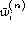

When large sets of context-dependent triphones are built using discrete models or tied-mixture models, under-training can be a severe problem since each state has a large number of mixture weight parameters to estimate. The HTK tool HSMOOTH allows these discrete probabilities or mixture component weights to be smoothed with the monophone weights using a technique called deleted interpolation .
HSMOOTH is used in combination with HEREST working in parallel mode. The training data is split into blocks and each block is used separately to re-estimate the HMMs. However, since HEREST is in parallel mode, it outputs a dump file of accumulators instead of updating the models. HSMOOTH is then used in place of the second pass of HEREST. It reads in the accumulator information from each of the blocks, performs deleted interpolation smoothing on the accumulator values and then outputs the re-estimated HMMs in the normal way.
HSMOOTH implements a conventional deleted interpolation scheme. However, optimisation of the smoothing weights uses a fast binary chop scheme rather than the more usual Baum-Welch approach. The algorithm for finding the optimal interpolation weights for a given state and stream is as follows where the description is given in terms of tied-mixture weights but the same applies to discrete probabilities.
Assume that HEREST has been set-up to output N separate blocks of accumulators. Let be the i'th mixture weight based on the accumulator blocks 1 to N but excluding block n, and let  be the corresponding context independent weight. Let be the i'th mixture weight count for the deleted block n. The derivative of the log likelihood of the deleted block, given the probability distribution with weights is given by
Since the log likelihood is a convex function of , this derivative allows the optimal value of to be found by a simple binary chop algorithm, viz.
function FindLambdaOpt:
if (D(0) <= 0) return 0;
if (D(1) >= 0) return = 1;
l=0; r=1;
for (k=1; k<=maxStep; k++){
m = (l+r)/2;
if (D(m) == 0) return m;
if (D(m) > 0) l=m; else r=m;
}
return m;
HSMOOTH is invoked in a similar way to HEREST. For example, suppose that the directory hmm2 contains a set of accumulator files output by the first pass of HEREST running in parallel mode using as source the HMM definitions listed in hlist and stored in hmm1/HMMDefs. Then the command
HSmooth -c 4 -w 2.0 -H hmm1/HMMDefs -M hmm2 hlist hmm2/*.accwould generate a new smoothed HMM set in hmm2. Here the -w option is used to set the minimum mixture component weight in any state to twice the value of MINMIX . The -c option sets the maximum number of iterations of the binary chop procedure to be 4.